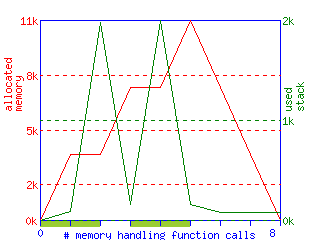

A pool of memory containing a stack of objects.
Obstack은 Object Stack의 약자로서, 일종의 small memory
allocator입니다. 대개의 C/C++ 책을 보면, 작은 크기의 메모리를 여러번
할당할 필요가 있을 경우, malloc(3)이나 new operator를 직접 쓰는
것보다, 따로 메모리 할당 루틴을 만들어 쓰는 기법을 소개하곤
합니다. 물론 잘 만들면 좀 더 나은 성능을 가진 small memory allocator를
만들 수 있겠지만, 이미 GNU C library에 포함되어 있기 때문에, obstack을
쓰는 것이 좀 더 현명한 선택이 될 수 있습니다. (Why reinvent the
wheel?)
Obstack은 GNU C library에 포함되어 있습니다. 좀 더 정확히 말하면, GNU
libiberty library에 포함되어 있으며, 이 libiberty library는 GNU C
library나 GCC, GDB 등의 소스에 포함되어 있는 라이브러리입니다. 필요한
소스는 단지 obstack.h와 obstack.c이기 때문에, GNU system이 아닌 다른
시스템에 포팅하기도 매우 쉽습니다.
글쓴이의 개인적인 경험을 바탕으로 말하자면, Obstack은 매우 이식성이 높습니다. 글쓴이는 obstack을 Windows, DOS(Turbo C 2.0), vxworks, psos등에 포팅한 경험을 갖고 있으며, 이 때, 소스 수정은 거의 필요없었습니다. 또한 시스템이 제공하는 memory allocator가 매우 느릴 경우, 또는 overhead가 클 경우등의 상황에서 obstack을 써서 큰 효과를 보았습니다.
GNU obstack은 malloc(3)과 다른 여러 특징을 가지는데, 크게 요약하면
다음과 같습니다:
malloc(3)에 비해, 함수
호출에 대한 overhead가 무척 작습니다.
Obstack을 쓰기 위해서는, 먼저 기본적인 memory allocator를 알려 주어야
합니다. 개발자는 매크로 obstack_chunk_alloc과 obstack_chunk_free를 각각
정의해주어야 하는데, 간단히 다음과 같이 써 주면 됩니다:
#define obstack_chunk_alloc malloc #define obstack_chunk_free free
물론, obstack 헤더 파일을 포함하는 코드도 써 주어야 할 것입니다 (위
매크로 정의와 #include의 순서는 상관 없습니다):
#include <obstack.h>
일단 위와 같이 환경 설정이 끝났다면, 이제 obstack을 하나 만들어야
합니다. (상황에 따라 여러 개 만들 수도 있습니다.) obstack을 만드는
대표적인 함수는 obstack_init()입니다. 다음과 같이 obstack을 만들 수
있습니다:
struct obstack stack; obstack_init(&stack);
obstack_init()은 내부적으로 메모리 블럭을 하나 만들고, 기타 초기 설정을
마치는 함수입니다. 만약 obstack_init()이 실패했을 경우, 전역 변수인
obstack_alloc_failed_handler에 저장된 함수 포인터를 호출해서 에러
상황을 알리게 됩니다. 개발자가 특별히 이 변수에 에러 처리 함수를
등록하지 않았다면, 기본적으로 에러를 출력하고 프로그램을 종료하게
됩니다.
주어진 obstack에 메모리를 할당하는 함수는 여러개가 존재합니다. 이 중
가장 대표적인 함수는 obstack_alloc()이며, malloc(3)과 같은 기능을
한다고 생각하시면 됩니다. 예를 들어, 문자열을 복사하는 함수인
strdup()과 비슷한 함수를 다음과 같이 만들 수 있습니다 (아래 코드는 GNU
C Library Manual에서 인용한 것입니다):
struct obtsack string_obstack; char * copystring(char *string) { size_t len = strlen(string) + 1; char *s = (char *)obstack_alloc(&string_obstack, len); memcpy(s, string, len); return s; }
이 외에도 다양한 할당 함수가 제공됩니다:
/* SIZE 크기의 메모리를 할당하고, ADDRESS에서 그 크기만큼의 내용을 읽어다 복사해줍니다. * 따라서 할당하고 나서, 초기값을 설정하는데 쓸모있는 함수입니다. */ void *obstack_copy(struct obstack *OBSTACK_PTR, void *ADDRESS, int SIZE); /* obstack_copy()와 비슷하지만, SIZE + 1의 크기를 할당하고 마지막 한 바이트를 * '\0'으로 채운다는 것만 다릅니다. 메모리를 할당하고 문자열을 집어넣을 때 쓸모있습니다. */ void *obstack_copy0(struct obstack *OBSTACK_PTR, void *ADDRESS, int SIZE);
앞에서도 잠깐 이야기했지만, obstack에 있는 메모리를 해제(free)하는
것은, malloc(3) … free(3)와 좀 다르게 동작합니다. 일단 메모리를
해제하는 함수는 obstack_free()입니다.
void obstack_free(struct obstack *OBSTACK_PTR, void *OBJECT);
이 함수는 주어진 obstack에 있는 OBJECT와, 이 OBJECT 이후에 할당한 모든
메모리를 해제합니다. 만약 OBJECT 파라메터에 NULL을 주면, 이 obstack에
할당된 모든 OBJECT가 해제(free)되며, 이 obstack은 더이상 쓸 수 없는
상태가 됩니다. 따라서 모든 메모리를 해제하면서, 동시에 이 obstack을
나중에 다시 쓰기 위해서는, 이 obstack에 맨 처음 할당했던 메모리 주소를
기억해 두었다가 OBJECT 파라메터에 전달해야 합니다.
예를 들어, 포인터 A, B, C가 있고, 각각 메모리를 10, 100, 1000 바이트씩 순서대로 할당해서 썼다고 가정해 봅시다. 이 때 이 모든 메모리를 해제하기 위해서는 다음과 같이 호출하면 됩니다:
struct obstack my_stack; void *A, *B, *C; A = obstack_alloc(&my_stack, 10); B = obstack_alloc(&my_stack, 100); C = obstack_alloc(&my_stack, 1000); /* ... */ obstack_free(&my_stack, A);
앞에서 말했듯이, 한 obstack에 있는 메모리 블럭을 해제하면, 그 obstack에서 이 메모리 블럭 이후에 할당한 모든 메모리까지 다 해제된다는 것을 다시 한 번 기억하기 바랍니다.
Obstack은 단계적으로 메모리 블럭을 할당할 수 있는 방법을 제공합니다. 예를 들어, 파일에서 한 token을 읽어서 메모리에 할당한다고 가정해 봅시다. 보통 token을 나타내는 문자열을 다 읽어오기 전에는, (크기를 모르기 때문에) 메모리를 할당할 수 없습니다. 그러나 obstack을 쓰면, 조금씩 메모리를 얻어 쓰다가, 마지막에 크기를 알게 된 순간에 지금까지 얻어쓴 크기만큼 메모리를 할당할 수 있습니다. 이 기능은 특히, 크기를 모르는 text를 파일/네트웍에서 받아 처리하는 함수를 작성할 때 매우 쓸모있습니다.
growing object를 처리하는 함수들은 앞에서 설명한 함수들과는 조금 다른
방식으로 동작합니다. 먼저, 조금씩 얻어쓰는 단계에서는 마지막에 고정될
메모리의 주소를 알 수 없습니다. 즉, 얻어쓰는 단계에서 메모리의 위치가
바뀔 수도 있다는 뜻입니다. 표준 C 라이브러리가 제공하는 realloc(3)을
생각하시면 이해하기 쉬울 것입니다.
한 obstack에서, growing object는 단 하나만 만들 수 있다는 것을 주의하기 바랍니다.
growing object를 위해, 메모리를 할당하는 함수는 매우 많습니다. 여기서 적당한 것을 골라 쓰시면 되며, 여러번 부르거나 섞어써도 상관없습니다.
/* 주어진 크기, SIZE만큼 메모리를 추가, 메모리 초기화 안함 */ void obstack_blank(struct obstack *OBSTACK_PTR, int SIZE); /* SIZE만큼 메모리를 추가, DATA가 가리키는 곳의 값으로 초기화 */ void obstack_grow(struct obstack *OBSTACK_PTR, void *DATA, int SIZE); /* obstack_grow()와 같음, 단 SIZE + 1의 크기를 추가하며, * 마지막에 '\0'을 자동으로 추가. */ void obstack_grow0(struct obstack *OBSTACK_PTR, void *DATA, int SIZE); /* 문자 C를 추가 */ void obstack_1grow(struct obstack *OBSTACK_PTR, char C); /* 포인터 값 DATA를 추가 */ void obstack_ptr_grow(struct obstack *OBSTACK_PTR, void *DATA); /* 정수 값 DATA를 추가 */ void obstack_int_grow(struct obstack *OBSTACK_PTR, int DATA);
따로 예제는 만들지 않겠습니다. 다만 obstack_blank()의 경우, 위에서
설명한 것 이외의 기능을 가지고 있습니다. 위 함수들을 써서 메모리를
조금씩 얻는 도중, 일정 크기의 메모리를 다시 반납하고 싶다면
obstack_blank()의 SIZE 파라메터에 음수값(negative value)을 주면
됩니다.
그리고, 나중에 메모리의 크기를 확실히 알았다면, 이제 지금까지 얻어썼던
메모리를 고정(fix)시켜야 합니다. 이 역할은 obstack_finish()하며, 이
때에, 실제 메모리의 주소가 결정됩니다.
void *obstack_finish(struct obstack *OBSTACK_PTR);
만약, 얻어쓰는 도중에, (임시적으로 사용하고 있는) 메모리의 주소를 알고
싶다면, osbtack_base()를 쓰면 됩니다. 또, 현재 얻어쓰고 있는 메모리의
총 크기를 알고 싶다면 obstack_object_size()를 쓰면 됩니다. 만약
obstack_object_size()가 0을 리턴한다면 현재 얻어쓰고 있는 메모리가
없다는 뜻입니다. 주의할 것은, 만약 현재 얻어쓰고 있는 메모리가 없을
경우, obstack_base()가 NULL을 리턴하지 않는다는 것입니다. 얻어쓰고 있는
메모리가 없을 경우 obstack_base()는, 다음에 할당할 메모리 위치를
리턴합니다. 따라서, 현재 얻어쓰고 있는 메모리가 있느냐 여부는
obstack_object_size()로 알아내는 것이 좋습니다.
/* 현재 growing object가 (임시로) 위치하고 있는 주소 리턴 */ void *obstack_base(struct obstack *OBSTACK_PTR); /* 현재 growing object의 크기 리턴, 없을 경우 0 리턴 */ int obstack_object_size(struct obstack *OBSTACK_PTR);
마지막으로, growing object를 쓴 완전한 예제를 보고 끝내겠습니다. 표준
입력(stdin)에서 텍스트를 읽어서, 띄어쓰기 단위로 한 단어를 읽은 다음,
obstack에 할당하고, 이를 리턴하는 함수인 get_word()를 만들겠습니다.
#include <assert.h> #include <ctype.h> #include <stdio.h> #include <stdlib.h> #include <obstack.h> #define obstack_chunk_alloc malloc #define obstack_chunk_free free struct obstack stack_; struct obstack *stack; char * get_word(void) { int ch; /* 따로 growing object가 있어서는 안됨 */ assert(obstack_object_size(stack) == 0); while ((ch = getchar()) != EOF) /* 여분의 공백 문자 skip */ if (!isspace((unsigned char)ch)) break; while (ch != EOF) { if (isspace((unsigned char)ch)) break; /* 다음 공백 문자 또는 EOF 전까지 growing object로 추가 */ obstack_1grow(stack, ch); ch = getchar(); } if (obstack_object_size(stack) == 0) return NULL; /* 완성된 단어를 할당하고, 리턴 */ return obstack_finish(stack); } int main(void) { char *word; stack = &stack_; obstack_init(stack); while ((word = get_word()) != NULL) printf("word: %s\n", word); obstack_free(stack, NULL); return 0; }
Obstack은 내부적으로 블럭 단위(보통 4096 byte)로 메모리를 할당해서, 사용자가 요청할 때 쪼개어 보내줍니다. 따라서 동적으로 메모리가 할당되는 과정을 지켜보면 계단식으로 메모리가 요청된다는 것을 예상할 수 있습니다. 아래 그래프는 위 프로그램을 실행시켰을 때, 메모리가 할당되는 과정을 보여줍니다. (빨간색 선이 동적으로 할당되는 메모리 크기입니다)

이외에도 obstack은 여러가지 기능을 제공합니다. (이 글에서는 다루지 않겠지만) 관심있는 분은 GNU C Library 매뉴얼을 찾아보기 바랍니다.
obstack에 관련된 것 중 추가적으로 알려드리고 싶은 것들입니다:
obstack_room()으로 확인할 수 있습니다.obstack_init()을 호출하면, obstack은 먼저 커다란 메모리
블럭을 하나 할당하고 나서 시작합니다. 시스템에 따라 다르지만, 대개 이
크기는 4096 byte입니다. 만약, 이 초기 블럭의 크기가 너무 크다고
생각하면, (매뉴얼에는 나와 있지 않지만) obstack_init() 대신에
obstack_begin()을 써서, 초기 크기가 적은 obstack을 만들 수
있습니다. (자세한 것은 obstack의 소스를 참고하기 바랍니다)obstack_alloc_failed_handler를 적당하게
바꿔주면 됩니다. 물론 이 함수 포인터를 적절하게 바꿔서, obstack 관련
모든 함수가 에러가 발생할 경우, 에러를 리턴하는 방식으로 wrapper를
만들 수도 있습니다.